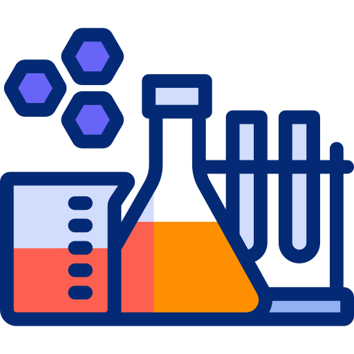
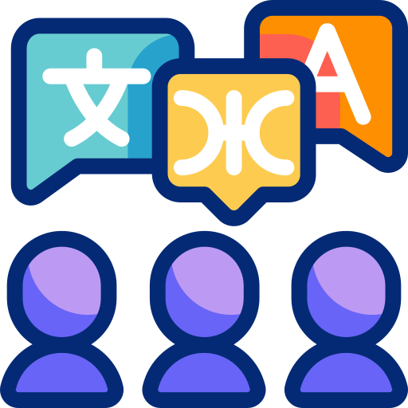

About Myself
I am a highly proficient back-end developer with deep expertise in Adobe Experience Manager (AEM), Java, and MicroServices, primarily developed using Spring Boot and AWS Lambdas. Over the years, I have worked extensively across industries such as e-commerce, retail, insurance, and travel, designing and deploying scalable, high-performance applications.
In addition to my technical skills, I have successfully led cross-functional teams in various capacities, including Technical Lead, Solution Architect, and Scrum Master. My leadership and problem-solving abilities drive successful outcomes for both clients and stakeholders.
Skills
- Wrangling Content: Adobe Experience Manager (AEM) (versions: 5.6, 6.1, 6.3, 6.5)
- Speaking Code: Java (versions: 7, 8, 11), JavaScript
- Springers: Spring MVC, Spring Web, Spring Security, Spring Boot
- Building Blocks: Chef, Groovy
- Data Enablers: Spring Data (JDBC, JPA), Hibernate
- Message Relay: Apache Kafka, AWS SQS
- Keeping Watch: NewRelic, Kibana, Grafana, AWS CloudWatch, AWS CloudTrail
- Construction Crew: Maven
- Container Magic: Docker
- Word Wizardry: Swagger
- Code Sheriffs: SonarQube, JUnit, Jasmine
- Frontline Fighters: HTML, CSS, Sass, JSP, AJAX, Muban
- Cloud Surfers: AWS Lambda (Java-powered), AWS S3, AWS ApiGateway
- Pipeline Wizards: Bamboo, Jenkins, GitLab
- Data Dwellers: MySQL, Amazon DynamoDB, PostgreSQL
- Platform Juggler: Linux, Windows, Mac
- Version Vets: SVN, Git (Stash, Gitlab)
- Idea Playground: IntelliJ, Eclipse
- Task Tacklers: Jira, ClickUp
- Agile Avengers: Agile Scrum, Spotify's Scaled Agile
- Creative Tools: Brightcove, Bynder
- Tokenizer: JWT
- Handy Tools: Putty, WinSCP, FileZilla, Postman, AEM CLI, AEMSync, JSONAPI
- Jack of All Trades: Developer, Technical Lead, Solution Architect, Scrum Master
 Expertise
I have a deep and varied expertise in web-based development, spanning across several business domains and roles. My work focuses on delivering high-quality, scalable, and efficient solutions that address client needs while leveraging advanced technology and industry best practices.
- Business Domains: Specialized experience in e-commerce, retail, and insurance sectors, creating tailored solutions that drive results and enhance user engagement.
- Client-Centric Solutions: Expertise in consulting on solution architecture to ensure clients receive optimized and impactful deliverables that address both current and future requirements.
- Web-Based Applications: Proficient in developing web-based applications, with a focus on e-commerce and content management systems to support high-traffic and content-rich platforms.
- Content Management & E-Commerce Systems: Hands-on experience with content management applications, specializing in Adobe Experience Manager (AEM), and comprehensive e-commerce platforms that drive business growth.
- Team Leadership: Proven record of leading technical teams, mentoring developers, and managing cross-functional team efforts to ensure successful project delivery.
Professional Experience
 Spoken Languages
- Marathi
- Hindi
- English
- Dutch
Nationality & Visa Status
 Nationality
Nationality
Indian
Visa Status
HSM (Valid Till May 2029) - No TWV needed
Interests & Hobbies
Exploring City Cafés & Food Joints
I love discovering unique spots around the city, exploring various cafés and food joints. Each visit adds a memorable culinary experience, and I enjoy immersing myself in the local culture through food.
Chasing the Northern Lights
One of my passions is chasing and capturing the beauty of the northern lights. After two previous attempts, I successfully captured the moment on my third try, and I plan to continue this journey to witness more of nature’s spectacular light show.
Capturing Drone Shots of the Grand Canyon
I dream of capturing a drone shot of the Grand Canyon. The vast, rugged beauty of the canyon offers a breathtaking canvas, and I am eager to experience and immortalize this iconic landscape from a unique aerial perspective.
Photography and Drone Enthusiast
Photography is a passion of mine, especially while traveling. With my drone, I capture unique angles and scenes that showcase the world’s beauty. My drone allows me to push creative boundaries and explore landscapes from a completely new perspective.
Anime Watching
In my free time, I unwind by watching various anime series. I enjoy exploring the different storytelling styles, characters, and art forms that anime offers, which keeps me engaged and inspired.